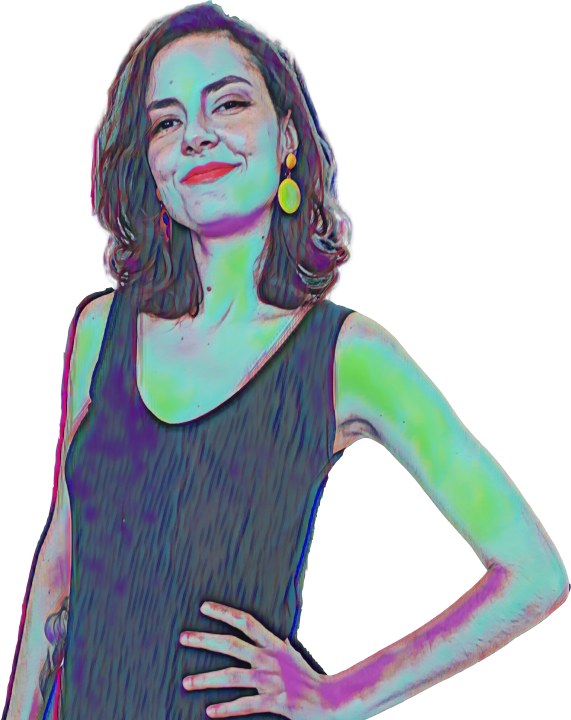

Olá, sou Gabriela Almeida
UX Designer

Adoro encarar novos desafios e aprender com eles. Esse foi um dos motivos de ter deixado o jornalismo e migrado para a minha nova paixão: a Experiência do Usuário. Acredito que trocar conhecimento e criar algo de forma colaborativa é o
que me motiva dentro do ambiente de trabalho. Busco sempre pensar de forma analítica, gosto de explorar novos caminhos e metodologias e acredito que sempre há algo novo a ser descoberto.
Há cinco anos atuo com pesquisas para a produção de conteúdo de empresas de diversos setores.Participei de um desafio de UX para dar visibilidade a uma organização do terceiro setor, e ajudei a construir uma possível alternativa para
promover o voto consciente no país. Ao final de 2020, finalizei cursos focados em experiência do usuário e publiquei artigos sobre o que tenho aprendido até aqui.
Há cinco anos atuo com pesquisas para a produção de conteúdo de empresas de diversos setores.Participei de um desafio de UX para dar visibilidade a uma organização do terceiro setor, e ajudei a construir uma possível alternativa para
promover o voto consciente no país. Ao final de 2020, finalizei cursos focados em experiência do usuário e publiquei artigos sobre o que tenho aprendido até aqui.
Há cinco anos atuo com pesquisas para a produção de conteúdo de empresas de diversos setores.Participei de um desafio de UX para dar visibilidade a uma organização do terceiro setor, e ajudei a construir uma possível alternativa para
promover o voto consciente no país. Ao final de 2020, finalizei cursos focados em experiência do usuário e publiquei artigos sobre o que tenho aprendido até aqui.